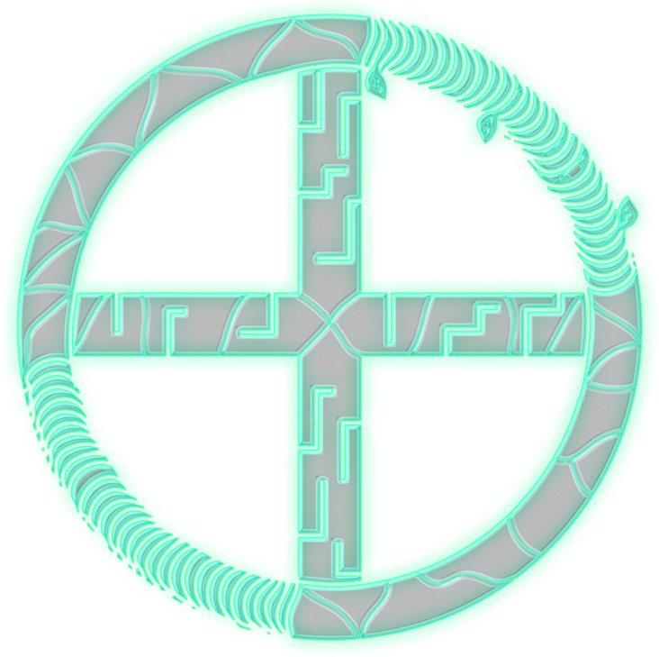

DIGITAL ECOSYSTEMS / XOR 26
26 XOR ’26
NALANDA COLLEGE / ICT COMPETITION DAY
Difference defines the outcome.
ICT Competition Day organized by the
Computer Society of Nalanda College.
Five disciplines.
Your next move.
In logic, XOR is true only when two inputs differ. That is the spirit of the day: it is not the same answer that wins, but the different one. Build what others missed.
| A | B | A ⊕ B |
|---|---|---|
| 0 | 0 | 0 |
| 0 | 1 | 1 |
| 1 | 0 | 1 |
| 1 | 1 | 0 |
// SAME IN, SAME OUT. DIFFERENT IN, DIFFERENT OUTCOME.
Our competitions.
Five challenges. Open a folder to explore the competitions and read their guidelines.
CLICK OR TAP TO OPEN · SELECT A FILE TO READ
Before
you enter.
Every detail matters. Read the general rules and your competition’s full requirements before submitting.
Download full guidelinesPDF · COMPLETE COMPETITION RULEBOOKICT Day · 8 January 2027
ICT Competition Day will be held on 8 January 2027. Preliminary-round dates, registration deadlines, submission deadlines, and entry links will be announced separately.
General participation rules
ICT Competition Day will be held on 8 January 2027. Preliminary-round dates, registration deadlines, submission deadlines, and entry links will be announced separately.
Students may participate in multiple competitions.
Schools may enter any number of students in individual events, with one entry per participant per event.
Submitted files and links must remain accessible to the judges throughout the judging period.
No changes may be made to submitted work after the announced submission deadline. This includes hosted websites, repositories, design files, and Google Drive files.
Incomplete submissions, including entries missing required files or links, will be disqualified.
Participants must credit external resources used and follow the rules of their respective competition.
Different events. Different rules.
AI-generated code, content, visuals, and AI-assisted development are not permitted in the Web Development Challenge. AI tools and AI-generated images are not permitted in Image Manipulation.
The UI/UX scenario’s 10-minute grace period applies only to the design scenario, not the actual competition deadline.
Make your
difference.
Explore the competitions · Registration details will be announced.